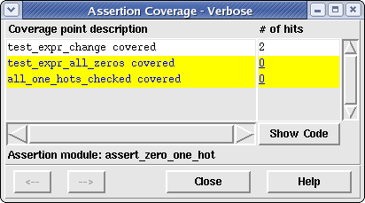
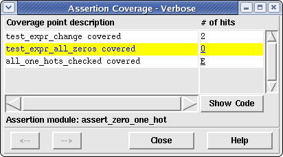

The Verbose Assertion Coverage window allows the user to see exactly which coverage points were hit or missed for a selected assertion instantiation in the design and, if hit, how many times the assertion coverage point (ACP) was hit during simulation. Additionally, this window allows you to bring up the Assertion Source File Viewer to view the internal assertion module code for the currently selected assertion instance. This lets the user view the code to determine what logically needs to occur to hit a given ACP.
To view this window, select the "Assert" mode in the Coverage Selection Bar in the main window and click on an underlined assertion instance name in the File Viewer. Note that both covered and uncovered assertion instance names can be selected. Doing so will cause the Verbose Assertion Coverage Window to be displayed for the selected assertion instantiation. Figure 1 shows an example of a zero_one_hot assertion that had the "test_expr_change covered" ACP covered (hit twice during simulation) and the other two ACPs uncovered during simulation.
Figure 1. Verbose Assertion Coverage Window
The window is made up of a simple table which contains the coverage point names within the selected assertion on the left and the number of times each of these coverage points were hit during simulation on the right. If a coverage point has not been hit, both the coverage point name and the number of hits (0) will be highlighted with the "uncovered" color selection as selected in the Preferences window. If a coverage point has been hit at least once, both the coverage point name and the number of hits will be highlighted with the "covered" color selection as selected in the Preferences window.
Below the table the name of the currently selected assertion type is named. To view the source code for this assertion, simply click on the Show Code button at the bottom right-hand portion of the coverage table. This will cause the source code for this assertion to be displayed in a new Assertion Source Viewer window.
Individual ACPs can be excluded/included for coverage consideration using the verbose assertion coverage window. This is accomplished by clicking on the 0 (ACP is currently included in coverage) or E (ACP is current excluded from coverage) value in the "# of hits" column. Changing an ACP from 0 to E (excluding the ACP from coverage consideration) will cause the summary assertion coverage information to be recalculated and redisplayed in the Main Window Summary Bar and the background color of the ACP will change from the uncovered to the covered background color. Changing an ACP from E to 0 (including the ACP for coverage consideration) will cause the summary assertion coverage information to be recalculated and redisplayed in the Main Window Summary Bar and background color of the ACP will change from the covered to the uncovered background color. Figure 2 below shows the above assertion instance with the last coverage point excluded from coverage.
Figure 2. Example of excluded ACP
If all ACPs for a given assertion instance have been excluded from coverage consideration, the Main Window File Viewer will automatically change the background color of the assertion instance name from the uncovered to the covered background color. The assertion instance name will still be underlined, allowing the user to still see the coverage information for that given assertion instance.
If the user excludes any ACP in the design, the "Save CDD..." option in the File Menu will be enabled. This allows the user to save the excluded property either back to the CDD file (or to a newly named CDD file). Doing so will allow the user to load the CDD file at a different time and retain the knowledge of which ACPs have been excluded/included for coverage. Additionally, if a saved CDD file with coverage exclusion is merged with another CDD file, the excluded ACP information is preserved for the resulting merged CDD file.
If the Verbose Assertion Coverage window is currently displayed, the user may select a new assertion in the Coverage File Viewer of the Main window. When a new assertion is selected, its information immediately replaces the currently selected assertion. This feature allows many different assertions to be viewed one after the other without having to create/destroy a new window for each.
The user may also see the previous or next uncovered assertion in the main viewer by clicking either the "<--" button (for previous signal viewing) or the "-->" button (for next signal viewing). Note that the "<--" button will be disabled if there is not a signal previous to the current signal in the given module and the "-->" button will be disabled if there is not a signal after the current signal in the given module.
Clicking the Close button will cause the Verbose Assertion Coverage window (and the Assertion Source Viewer window if it is currently displayed) to close and the current selection identifier to be removed from the Coverage Viewer in the main window.
Clicking the Help button will cause this help page to be displayed in a web brower.